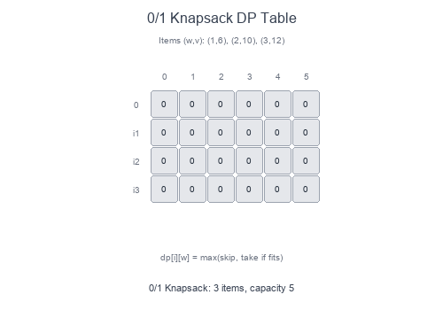

Introduction to 0/1 Knapsack Pattern (Dynamic Programming)
The 0/1 Knapsack pattern is a foundational dynamic programming technique for optimization problems where you must decide whether to include or exclude each item (hence "0/1"—you can't take fractions).
Visual Example
DP Table for Knapsack

Each cell dp[i][w] represents the maximum value achievable using the first i items with capacity w. For each item, we choose: take it (if it fits) or skip it.
What is Dynamic Programming?
DP solves problems by:
- Breaking them into overlapping subproblems
- Storing results to avoid recomputation (memoization or tabulation)
- Building solutions from smaller subproblems (optimal substructure)
When to Use 0/1 Knapsack Pattern
- Select items with constraints (weight, cost, time).
- Partition problems (can we split into equal subsets?).
- Subset sum problems (can we reach a target sum?).
- Counting subsets with specific properties.
- Minimization/maximization with binary choices.
Pattern Recipe
Top-Down (Memoization)
- Define recursive function with state (index, remaining capacity).
- Base case: no items left or no capacity.
- For each item:
max(skip, take if fits). - Cache results in a memo dictionary.
Bottom-Up (Tabulation)
- Create DP table:
dp[n+1][capacity+1]. - Initialize base cases (0 items or 0 capacity = 0 value).
- Fill table row by row.
- Answer is
dp[n][capacity].
Complexity
- Time: $O(n \times W)$ where n = items, W = capacity
- Space: $O(n \times W)$ for 2D table, or $O(W)$ with space optimization
Short Examples — Python
Classic 0/1 Knapsack
def knapsack(weights: list[int], values: list[int], capacity: int) -> int:
n = len(weights)
dp = [[0] * (capacity + 1) for _ in range(n + 1)]
for i in range(1, n + 1):
for w in range(capacity + 1):
# Skip item i-1
dp[i][w] = dp[i-1][w]
# Take item i-1 (if it fits)
if weights[i-1] <= w:
dp[i][w] = max(
dp[i][w],
dp[i-1][w - weights[i-1]] + values[i-1]
)
return dp[n][capacity]
# Example:
# weights = [1, 2, 3], values = [6, 10, 12], capacity = 5
# → 22 (take items with weights 2 and 3)
Space-Optimized (1D Array)
def knapsack_optimized(weights: list[int], values: list[int], capacity: int) -> int:
dp = [0] * (capacity + 1)
for i in range(len(weights)):
# Traverse right to left to avoid using updated values
for w in range(capacity, weights[i] - 1, -1):
dp[w] = max(dp[w], dp[w - weights[i]] + values[i])
return dp[capacity]
Subset Sum (Can we reach target?)
def can_partition(nums: list[int], target: int) -> bool:
dp = [False] * (target + 1)
dp[0] = True # Empty subset sums to 0
for num in nums:
for t in range(target, num - 1, -1):
dp[t] = dp[t] or dp[t - num]
return dp[target]
Equal Subset Partition
def can_equal_partition(nums: list[int]) -> bool:
total = sum(nums)
# Can't split odd sum equally
if total % 2 != 0:
return False
target = total // 2
dp = [False] * (target + 1)
dp[0] = True
for num in nums:
for t in range(target, num - 1, -1):
dp[t] = dp[t] or dp[t - num]
return dp[target]
Count Subsets with Sum
def count_subsets(nums: list[int], target: int) -> int:
dp = [0] * (target + 1)
dp[0] = 1 # One way to make sum 0: empty subset
for num in nums:
for t in range(target, num - 1, -1):
dp[t] += dp[t - num]
return dp[target]
Minimum Subset Sum Difference
def min_subset_diff(nums: list[int]) -> int:
total = sum(nums)
target = total // 2
dp = [False] * (target + 1)
dp[0] = True
for num in nums:
for t in range(target, num - 1, -1):
dp[t] = dp[t] or dp[t - num]
# Find largest sum <= total/2 that's achievable
for t in range(target, -1, -1):
if dp[t]:
return total - 2 * t
return total
0/1 Knapsack Variants
| Problem | State | Transition |
|---|---|---|
| Classic Knapsack | dp[i][w] = max value |
max(skip, take) |
| Subset Sum | dp[sum] = reachable? |
dp[t] or dp[t-num] |
| Count Subsets | dp[sum] = count |
dp[t] += dp[t-num] |
| Unbounded Knapsack | dp[w] (left to right) |
Can take item multiple times |
Common Pitfalls
- Wrong traversal order: For 0/1, traverse capacity right to left in 1D optimization.
- Off-by-one errors: Watch indices when translating from 2D to 1D.
- Forgetting base case:
dp[0] = Trueordp[0] = 1for counting. - Integer overflow: Sum can exceed int range in some languages.
DP Approach Comparison
| Approach | Pros | Cons |
|---|---|---|
| Top-Down (Memo) | Natural recursion, only computes needed states | Recursion overhead, stack limits |
| Bottom-Up (Table) | No recursion, often faster | May compute unnecessary states |
| Space-Optimized | O(W) space | Can't reconstruct solution easily |
Problems to Practice
- 0/1 Knapsack
- Partition Equal Subset Sum
- Target Sum
- Last Stone Weight II
- Ones and Zeroes
- Coin Change (unbounded variant)